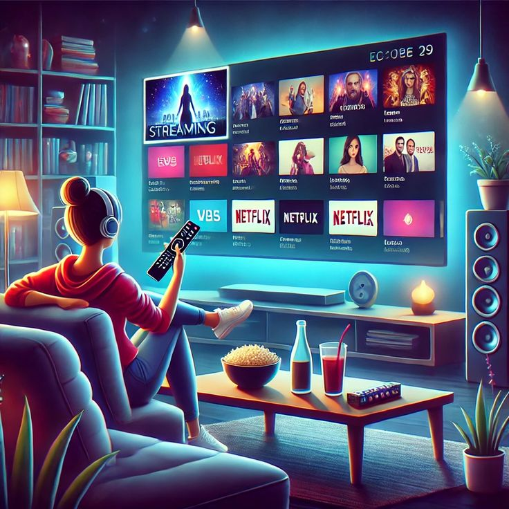

| Home Page | Findings | Research |
Online streaming has fundamentally restructured the global media and entertainment landscape, shifting consumer habits away from rigid, scheduled broadcasting toward a decentralized, on-demand economy. Defined as the continuous transmission of audio, video, and live media files over the internet, streaming technology allows users to access content instantly without the prerequisite of downloading large files or storing them locally.
